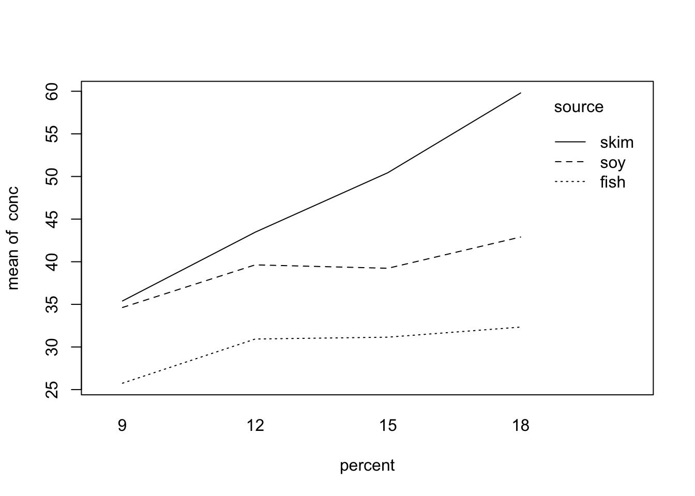

Chapter 5 Least squares mean
5.2 Pigs data example
library(emmeans)
library(tidyverse)with(pigs, interaction.plot(percent, source, conc))
pigs%>%group_by(percent)%>%summarise(marginalmean=mean(conc))## # A tibble: 4 × 2
## percent marginalmean
## <dbl> <dbl>
## 1 9 32.7
## 2 12 38.0
## 3 15 40.1
## 4 18 39.9pigs%>%group_by(percent, source)%>%summarise(mean(conc))## `summarise()` has grouped output by 'percent'. You can override using the `.groups` argument.## # A tibble: 12 × 3
## # Groups: percent [4]
## percent source `mean(conc)`
## <dbl> <fct> <dbl>
## 1 9 fish 25.8
## 2 9 soy 34.6
## 3 9 skim 35.4
## 4 12 fish 30.9
## 5 12 soy 39.6
## 6 12 skim 43.5
## 7 15 fish 31.2
## 8 15 soy 39.2
## 9 15 skim 50.4
## 10 18 fish 32.3
## 11 18 soy 42.9
## 12 18 skim 59.8lm1=lm(conc ~ source + factor(percent), data = pigs)
summary(lm1)##
## Call:
## lm(formula = conc ~ source + factor(percent), data = pigs)
##
## Residuals:
## Min 1Q Median 3Q Max
## -7.887 -2.590 -1.090 2.023 12.300
##
## Coefficients:
## Estimate Std. Error t value Pr(>|t|)
## (Intercept) 23.303 2.364 9.859 9.99e-10 ***
## sourcesoy 9.474 2.334 4.059 0.000485 ***
## sourceskim 15.584 2.388 6.526 1.17e-06 ***
## factor(percent)12 6.355 2.472 2.570 0.017101 *
## factor(percent)15 8.312 2.633 3.156 0.004414 **
## factor(percent)18 11.625 2.981 3.899 0.000722 ***
## ---
## Signif. codes: 0 '***' 0.001 '**' 0.01 '*' 0.05 '.' 0.1 ' ' 1
##
## Residual standard error: 5.076 on 23 degrees of freedom
## Multiple R-squared: 0.6997, Adjusted R-squared: 0.6344
## F-statistic: 10.72 on 5 and 23 DF, p-value: 2.071e-05lsm=emmeans(lm1, specs = "source")
lsm## source emmean SE df lower.CL upper.CL
## fish 29.9 1.62 23 26.5 33.2
## soy 39.4 1.65 23 35.9 42.8
## skim 45.5 1.74 23 41.9 49.1
##
## Results are averaged over the levels of: percent
## Confidence level used: 0.95pairs(lsm)## contrast estimate SE df t.ratio p.value
## fish - soy -9.47 2.33 23 -4.059 0.0014
## fish - skim -15.58 2.39 23 -6.526 <.0001
## soy - skim -6.11 2.34 23 -2.613 0.0398
##
## Results are averaged over the levels of: percent
## P value adjustment: tukey method for comparing a family of 3 estimatesCheck how estimated marginal mean is calculated:
lm1coef=as.vector(coef(lm1))
# balanced design
lm1coef[1]+(lm1coef[4]+lm1coef[5]+lm1coef[6])/4## [1] 29.87661lm1coef[1]+lm1coef[2]+(lm1coef[4]+lm1coef[5]+lm1coef[6])/4## [1] 39.35038lm1coef[1]+lm1coef[3]+(lm1coef[4]+lm1coef[5]+lm1coef[6])/4## [1] 45.46034Add one more column in pigs dataset
set.seed(123)
pigs$normalrv=rnorm(nrow(pigs), mean = 10, sd = 1)
lm2=lm(conc ~ source + factor(percent) + normalrv, data = pigs)
summary(lm2)##
## Call:
## lm(formula = conc ~ source + factor(percent) + normalrv, data = pigs)
##
## Residuals:
## Min 1Q Median 3Q Max
## -8.7188 -3.0119 -0.6837 2.5303 10.2160
##
## Coefficients:
## Estimate Std. Error t value Pr(>|t|)
## (Intercept) 3.497 11.927 0.293 0.772137
## sourcesoy 9.613 2.246 4.280 0.000305 ***
## sourceskim 17.241 2.497 6.905 6.2e-07 ***
## factor(percent)12 6.146 2.381 2.581 0.017044 *
## factor(percent)15 7.517 2.576 2.918 0.007976 **
## factor(percent)18 13.224 3.019 4.380 0.000239 ***
## normalrv 1.940 1.147 1.692 0.104811
## ---
## Signif. codes: 0 '***' 0.001 '**' 0.01 '*' 0.05 '.' 0.1 ' ' 1
##
## Residual standard error: 4.882 on 22 degrees of freedom
## Multiple R-squared: 0.7342, Adjusted R-squared: 0.6618
## F-statistic: 10.13 on 6 and 22 DF, p-value: 2.085e-05emmeans(lm2, specs = "source")## source emmean SE df lower.CL upper.CL
## fish 29.4 1.58 22 26.2 32.7
## soy 39.1 1.60 22 35.7 42.4
## skim 46.7 1.82 22 42.9 50.5
##
## Results are averaged over the levels of: percent
## Confidence level used: 0.95- Model:
\[y_i=\alpha_0+\alpha_1 I(S_i=\text{soy})+\alpha_2 I(S_i=\text{skim})+\alpha_3 I(F_i=12)+\alpha_4 I(F_i=15)+ \\ \alpha_5 I(F_i=18)+ \alpha_6 X_i \]
- Assume a balanced design, we have \[\begin{equation*} \begin{split} E(y_i \mid S_i=\text{fish})=E_{X}\left\{\frac{1}{4}\left[E(y_i \mid S_i=\text{fish}, F_i=9,X)+E(y_i \mid S_i=\text{fish}, F_i=12,X)+ \\ E(y_i \mid S_i=\text{fish}, F_i= 15,X)+E(y_i \mid S_i=\text{fish}, F_i=18,X)\right]\right\} \end{split} \end{equation*}\]
alpha0=as.vector(coef(lm2))[1]
alpha1=as.vector(coef(lm2))[2]
alpha2=as.vector(coef(lm2))[3]
alpha3=as.vector(coef(lm2))[4]
alpha4=as.vector(coef(lm2))[5]
alpha5=as.vector(coef(lm2))[6]
alpha6=as.vector(coef(lm2))[7]
meanX=mean(pigs$normalrv)
alpha0+(alpha3+alpha4+alpha5)/4+alpha6*meanX## [1] 29.44408alpha0+alpha1+(alpha3+alpha4+alpha5)/4+alpha6*meanX## [1] 39.0572alpha0+alpha2+(alpha3+alpha4+alpha5)/4+alpha6*meanX## [1] 46.684975.3 Iris data example
# make virginica the reference group
iris <- iris %>%
mutate( Species = forcats::fct_relevel(Species, 'virginica') )
m1 <- lm( Sepal.Width ~ Sepal.Length + Species, data=iris ) # Parallel Lines
summary(m1)##
## Call:
## lm(formula = Sepal.Width ~ Sepal.Length + Species, data = iris)
##
## Residuals:
## Min 1Q Median 3Q Max
## -0.95096 -0.16522 0.00171 0.18416 0.72918
##
## Coefficients:
## Estimate Std. Error t value Pr(>|t|)
## (Intercept) 0.66899 0.30776 2.174 0.0313 *
## Sepal.Length 0.34988 0.04630 7.557 4.19e-12 ***
## Speciessetosa 1.00751 0.09331 10.798 < 2e-16 ***
## Speciesversicolor 0.02412 0.06521 0.370 0.7120
## ---
## Signif. codes: 0 '***' 0.001 '**' 0.01 '*' 0.05 '.' 0.1 ' ' 1
##
## Residual standard error: 0.289 on 146 degrees of freedom
## Multiple R-squared: 0.5693, Adjusted R-squared: 0.5604
## F-statistic: 64.32 on 3 and 146 DF, p-value: < 2.2e-16emmeans(m1, specs = "Species")## Species emmean SE df lower.CL upper.CL
## virginica 2.71 0.0535 146 2.61 2.82
## setosa 3.72 0.0563 146 3.61 3.83
## versicolor 2.74 0.0411 146 2.66 2.82
##
## Confidence level used: 0.95Calculate the estimated marginal mean as follows:
Model: \(y_i=\alpha_0+\alpha_1X_i+\alpha_2 I(S_i=\text{setosa})+\alpha_3 I(S_i=\text{versicolor})\)
\(E(y_i \mid S_i=\text{virginica})=E_{X}(E(y_i \mid S_i=\text{virginica}, X))=\alpha_0+\alpha_1 E(X)\)
\(E(y_i \mid S_i=\text{setosa})=E_{X}(E(y_i \mid S_i=\text{setosa}, X))=\alpha_0+\alpha_1 E(X)+\alpha_2\)
\(E(y_i \mid S_i=\text{versicolor})=E_{X}(E(y_i \mid S_i=\text{versicolor}, X))=\alpha_0+\alpha_1E(X)+\alpha_3\)
alpha0=as.vector(coef(m1))[1]
alpha1=as.vector(coef(m1))[2]
alpha2=as.vector(coef(m1))[3]
alpha3=as.vector(coef(m1))[4]
meanX=mean(iris$Sepal.Length)
alpha0+alpha1*meanX## [1] 2.713456alpha0+alpha1*meanX+alpha2## [1] 3.720966alpha0+alpha1*meanX+alpha3## [1] 2.737578